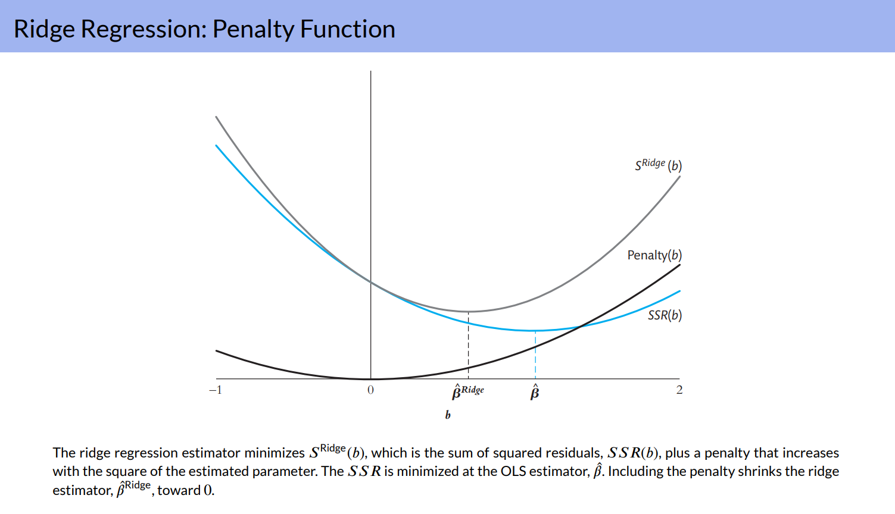
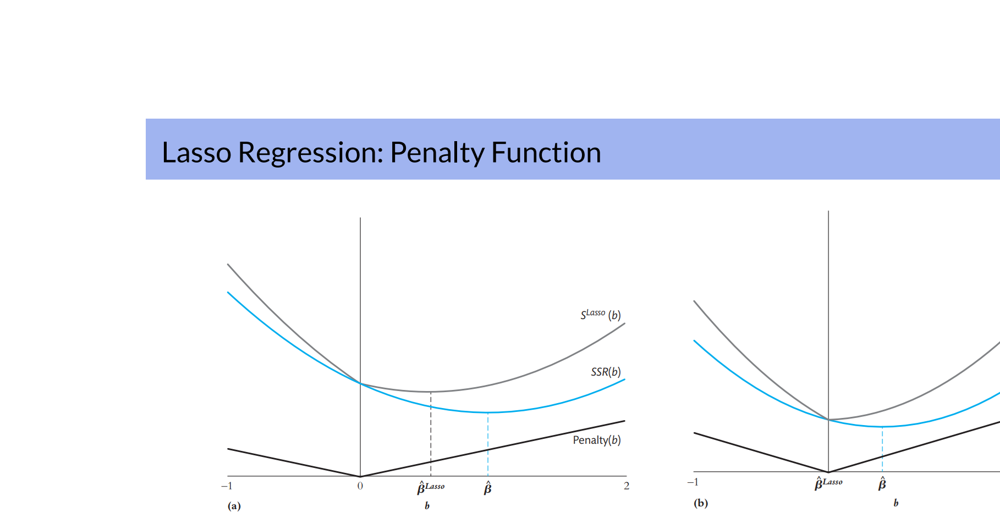
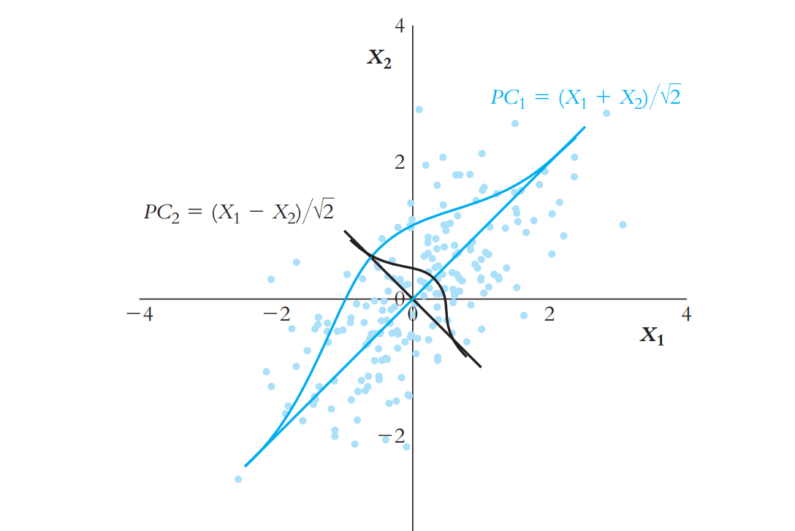

Econometric Methods Lecture
08-12-2024
Big data:Many observations and/or many predictors.
Includes datasets withmany categories.
Challenges: Storing and accessing large data sets efficiently and developing fast algorithms for estimating models.
OLS overfits in large studies: Use data on 3, 932 elementary schools in California to predict school-level test scores using data on school and community characteristics. Half of these observations are used to estimate prediction models, while the other half are reserved to test their performance. Large data sets have many predictors. The analysis starts with 817 predictors and is later expanded to 2065 predictors. With so many predictors, OLS overfits the data and makes poor out-of-sample predictions.
Shrinkage estimators: Better out-of-sample predictors than OLS. Shrinkage estimators are biased and may not have a causal interpretation, but the variance of the shrinkage estimator is smaller, which improves out-of-sample prediction.
Many predictors: Even if one starts with only a few dozen primitive predictors, including squares, cubes, and interactions very quickly expands the number of regressors into the hundreds or thousands.
Categorization: Regression with a binary dependent variable and regression with many categories.
Testing multiple hypotheses: The F-statistic of a joint hypothesis on a group of coefficients is not well suited to find out which of the treatments is effective. Special methods have been developed to test large numbers of individual hypotheses to determine which treatment effect is nonzero.
Nonstandard data: Including text and images.
Deep learning: Non-linear models are estimated (“trained”) using very many observations. Useful for pattern recognition, such as facial recognition; speech recognition; multi-language translation; detecting anomalies in medical scans; interpreting network data on social media; high-frequency trading in financial markets.
The analysis of the district test score data reveals nonlinearities and interactions in the test score regressions. For example, there is a nonlinear relationship between test scores and the student-teacher ratio and this relationship differs depending on whether there are a large number of English learners in the district. These nonlinearities are handled by includ- ing third-degree polynomials of the student–teacher ratio and interaction terms.
If only the main variables are used, there are 38 regressors. Including interactions, squares, and cubes increases the number of predictors to 817.
We can also use a larger data set with 2, 065 predictors more than the 1, 966 observations in the estimation sample. While it does not violate the Gauss–Markov theorem, OLS can pro- duce poor predictions when the number of predictors is large relative to the sample size.
Main variables (38)
Fraction of students eligible for free or reduced-price lunch
Fraction of students eligible for free lunch Fraction of English learners
Teachers’ average years of experience
Instructional expenditures per student
Median income of the local population
Student–teacher ratio
Number of enrolled students
Fraction of English-language proficient students
Ethnic diversity index
Ethnicity variables (8): fraction of students who are American Indian, Asian, Black, Filipino, Hispanic, Hawaiian, two or more, none reported Number of teachers
Fraction of first-year teachers
Fraction of second-year teachers
Part-time ratio (number of teachers divided by teacher full-time equivalents)
Per-student expenditure by category, district level (7)
Per-student expenditure by type, district level (5)
Per-student revenues by revenue source, district level (4)
Mean-Squared Prediction Error (MSPE): Expected value of the square of the prediction er- ror that arises when the model is used to make a prediction for an observation not in the data set.
\(MSPE = E[Y^{OOS} − Y\hat(X^{OOS})^2]\) where \(X^{OOS}\) and \(Y^{OOS}\) are out-of-sample observations on X and Y ; where \(Y\hat(X^{OOS})\) is the predicted value of Y for some given value x.
Oracle prediction: \(E[Y^{OOS}|X^{OOS}]\) The conditional mean minimizes the MSPE. It is not directly observable, so estimating it with the model coefficients of the prediction model introduces additional sources of error.
The Oracle prediction is the benchmark against which to judge all feasible predictions.
Standardized regressors: Regressors are transformed to have mean 0 and variance 1. \(X_{ji} = \frac{X_{ji}^{orignal} - \mu_{X_j}^{original}}{\sigma_{X_j}^original}\) where \(\mu_{X_j}^{original}\) is the population mean of the original regressor.
Standardized regressand: The regressand is transformed to have mean 0.
Standardized predictive regression model: The intercept is excluded because all the variables have mean 0. \(Y_i = \beta_1X_{1i} + \beta_2X_{2i} + ... + \beta_kX_{ki} + u_i\)
The regression coefficients have the same units.
Interpretation: \(\beta_j\) is the difference in the predicted value of Y associated with a one standard deviation difference in \(X_j\), holding all other regressors constant.
Minimize the variance term, taking the bias as given - The standardized predictive regression model can be written as the sum of two components:
\(MSPE = \sigma_u^2 + E[(\beta_1 - \beta_1^*)X_{1i} + (\beta_2 - \beta_2^*)X_{2i} + ... +\\ (\beta_k - \beta_k^*)X_{ki}]^2\)
The mean-squared error is the sum of the bias and of the variance.
The first term \(\sigma_u^2\) is the variance of the oracle prediction error: The prediction error made using the true (unknown) conditional mean.
The second term is the contribution to the prediction error arising from the estimated regression coefficients. This cost arises from estimating the coefficients instead of using true oracle prediction.
Objective: Minimize the variance term, taking the bias as given.
Prediction for an out-of-sample observation: Because the regressors are standardized and the dependent variable is demeaned, the out-of-sample observation on the predictors must be standardized using the in-sample mean and standard deviation, and the in-sample mean of the dependent variable must be added back into the prediction.
In the special case of homoskedastic regression errors, the MSPE of OLS is given by \(MSPE ≈ \sigma_u^2(1 + \frac{k}{n})\) The approximation more accurate for large n and small k/n.
The cost of using OLS, as measured by the MSPE, depends on the ratio of the number of regressors to the sample size.
In the school test score application with 38 regressors, using OLS has a loss of only 2% relative to the Oracle prediction. But with 817 regressors, the loss increases to 40%. \(\frac{k}{n} = \frac{38}{1, 966} ≈ 0.02\) \(\frac{k}{n} = \frac{817}{1, 966} ≈ 0.40\)
Because OLS is unbiased, the loss is entirely due to the variance term. Under Gauss-Markov, this is the smallest loss in the class of linear, unbiased estimators.
The loss can be reduced … using biased estimators!
Shrinkage estimator: Introduces bias by “shrinking” the OLS estimator toward a specific number and thereby reducing the variance of the estimator.
Because the mean squared error is the sum of the variance and the squared bias, if the esti- mator variance is reduced by enough, then the decrease in the variance can more than com- pensate for the increase in the squared bias.
James-Stein estimator: When the regressors are uncorrelated, the James-Stein estimator can be written \(\tilde\beta^{JS}=c\hat{\beta}\), where \(\hat{\beta}\) is the OLS estimator and c is a factor that is less than 1 and depends on the data. Since c1, the JS estimator shrinks the OLS estimator toward 0 and thus is biased toward 0.
James and Stein (1961): If the errors are normally distributed and \(k≥ 3\), their estimator has a lower mean squared error than the OLS estimator, regardless of the true value of β.
James-Stein leads to the family of shrinkage estimators, which includes ridge regression and the Lasso estimator.
Split sample:
m-fold cross validation: 1. Estimate the MSPE by dividing the data set into two parts: an “estimation” subsample and a “test” subsample used to simulate out-of-sample prediction.
2. Use the combined sub-samples 2, 3, … , m to compute \(\tilde\beta\), an estimate of β.
Use \(\tilde\beta\) to compute predicted values \(\hat{Y}\) and prediction errors \(Y-\hat{Y}\) for sub-sample 1.
Using sub-sample 1 as the test sample, estimate the MSPE with the predicted values in sub-sample 1.
Repeat steps 2-4 leaving out sub-sample 2, then 3, …, then m.
The m-fold cross-validation estimator of the MSPE is estimated by averaging these m sub-sample estimates of the MSPE.
\(MSPE_{m-fold cross-validation} = \frac{1}{m}\sum_{i}\widehat{MSPE_i}\) where \({n_i}\) is the number of observations in sub-sample i.
The tradeoff
Choosing the value of m involves a tradeoff between efficiency of the estimators and computational requirements.
More observations: A larger value of m produces more efficient estimators of β, because more observations are used to estimate β. leave-one-out cross-validation estimator: Set m = n − 1. This maximizes the number of observations used.
More computations:A larger value ofmimplies that β must be estimatedmtimes. The leave- one-out cross validation may demand too much computational power.
School test score application: A compromise value m = 10 is selected, meaning that each sub-sample estimator of β uses 90% of the sample.
Penalized Sum of Squared Residuals - Penalty: To shrink the estimated coefficients toward 0, penalize large values of the estimate. - Ridge regression estimator: Minimizes the penalized sum of squares - the sum of squared residuals plus a penalty factor that increases with the sum of the squared coefficients: \(S^{Ridge}(b;\lambda_{Ridge}) = \sum_{i=1}^n(Y_i - b_1X_{1i} - ... - b_kX_{ki})^2 + \lambda_{Ridge}\sum_{j=1}^kb_j^2\)
Ridge shrinkage parameter: λRidge ≥ 0.
First term: Sum of squared residuals for candidate estimator b.
Second term: Penalizes the estimator for choosing a large estimate of the coefficient.
In the special case that the regressors are uncorrelated, the ridge regression estimator is: \(\tilde\beta^{Ridge} = [\frac{1}{1 + \frac{\lambda_{Ridge}}{\sum_{j=1}X_{ji}^2}}]\hat\beta\)
where \(\hat\beta_j\) is the OLS estimator of \(β_j\).

Choosing the Shrinkage Parameter
Choose λRidge to minimize the estimated MSPE, using the m-fold cross-validation estimator of the MSPE.
Suppose you have two candidate values 0.1 and 0.2. Let β ̃be the Ridge estimator for a given value ofλRidge. Compute the predictions in the test sample and corresponding \(\widehat{MSPE}\). Compare the values of MSPE obtained for λRidge = 0.1 and λRidge = 0.2. Select the smaller of the two values.
Typically the Ridge estimator that minimizes the m-fold cross-validation MSPE differs from the OLS estimator.
Fit a predictive model for school test scores using 817 predictors with 1, 966 observations.
The square root of the MSPE estimates the magnitude of a typical out-of-sample prediction error.
The choice of m = 10 represents a practical balance between the desire to use as many observations as possible to estimate the parameters and the computational burden of re-peating that estimation m times for each value of λRidge.
The MSPE is minimized for \(\hat\lambda_{Ridge} = 2.233\).
The square-root of MSPE evaluated at \(\lambda_{Ridge}=\hat\lambda_{Ridge}\) is about 39.5.
The square-root of MSPE evaluated at λRidge = 0 — the OLS estimator — is about 78.2.
Because \(\hat\lambda_{Ridge}\) minimizes the cross-validated MSPE, the cross-validated MSPE evaluated at \(\hat\lambda_{Ridge}\) is a biased estimator of the MSPE. We therefore use the remaining 1966 observations to obtain an unbiased estimator of the MSPE for ridge regression using \(\hat\lambda_{Ridge}\).
Penalized Sum of Squared Residuals - The Lasso estimator minimizes a penalized sum of squares, where the penalty increases with the sum of the absolute values of the coefficients:
\(S^{Lasso}(b; \lambda_{Lasso}) = \sum_{i=1}^{n}(Y_i - b_1X_{1i} - ... - b_kX_{ki})^2 + \lambda_{Lasso}\sum_{j=1}^{k}|b_j|\)
where \(\lambda_{Lasso}\) is the Lasso shrinkage parameter.

Choosing the Shrinkage Parameter
Unlike OLS and ridge regression, there is no simple expression for the Lasso estimator when \(k > 1\), so the Lasso minimization problem must be done using specialized algorithms. Recent advances in machine learning have made it easier to compute Lasso problems.
With Ridge and Lasso regressions, the estimated coefficients depend on the specific choice of the linear combination of regressors used. Selecting regressors requires more care because predictions are more sensitive to the choice of regressors.
Using the California Schools data on test scores yields: \(MSPE_{OLS} = 78.2\) , \(\hat\lambda_{Lasso} = 4,527\) , \(MSPE_{Lasso} = 39.7\), \(\hat\lambda_{Ridge} = 2, 233\), \(MSPE_{Ridge} = 39.5\).
If two regressors are perfectly collinear, one of them must be dropped — to avoid falling into the dummy variable trap.
This suggests dropping a variable if it is highly correlated (even imperfectly) with the other regressors.
Principal components analysis implements this strategy — to avoid falling into the “too many variables trap”. Linear combinations of variables selected so that the principal components are mutually uncorrelated and keep as much information as possible.
Principal Components with 2 Variables:
The linear combination weights for the first principal component are chosen to maximize its variance — to capture as much of the variation as possible.
The linear combination weights for the second principal component are chosen to be uncorrelated with the first principal component and to capture as much of the variance as possible after controlling for the first principal component.
The linear combination weights for the third principal component are chosen to be uncorrelated with the first two components and, again, to capture as much of the variance as possible, after controlling for the first two components.
And again for the fourth, fifth, …, nth components.
Let \(X_1\), \(X_2\) be standard normal random variables with population correlation \(\rho=0.7\)
The first principal component is the weighted average, \(PC_1 = w_1X_1 + w_2X_2\), with the maximum variance, where w1 and w2 are the principal component weights.
The second principal component is chosen to be uncorrelated with the first. This minimizes the spread of the variables.
When there are only two variables, the first principal component maximizes the variance of the linear combination, while the second principal component minimizes the variance of the linear combination.
Together the two principal components explain all of the variance of X. The fraction of the total variance explained by the principal components are: \(\frac{var(PC_1)}{var(X_1) + var(X_2)} = 0.85\) and \(\frac{var(PC_2)}{var(X_1) + var(X_2)} = 0.15\).
The variances are \(var(PC_1) = 1+ |\rho|\) and \(var(PC_2) = 1- |\rho|\), where \(cov(X_1, X_2) = \rho\).

Two standard normal random variables, \(X_1\) and \(X_2\) , with population correlation 0.7. The first principal component (PC1) maximizes the variance of the linear combination of these variables, which is done by adding X1 and X2. The second principal component (PC2) is uncorrelated with the first and is obtained by subtracting the two variables. The principal component weights are normalized so that the sum of squared weights adds to 1. The spread of the variables is greatest in the direction of the \(45^o\) line. Along the \(45^o\) line, the weights are equal, so w1 = w2 = 1/√2 and \(PC_1 = (X_1 + X_2)/\sqrt{2}\) and \(PC_2 = (X_1 - X_2)/\sqrt{2}\).
The Principal Components of the k variables \(X_1,\dots,X_k\) are the linear combinations of the Xs that have the following properties: 1. The squared weights of the linear combinations sum to 1. 2. The first principal component maximizes the variance of its linear combination. 3. The second principal component maximizes the variance of its linear combination, subject to its being uncorrelated with the first principal component. 4. The jth principal component maximizes the variance of its linear combination, subject to its being uncorrelated with the first \(j-1\) principal components.
\(\sum_{j=1}^{min(n,k)} var(PC_j) = \sum_{j=1}^k var(X_j)\)
Square root of the MSPE for principal components prediction
Do the many-predictor methods improve upon test score predictions made using OLS with a small data set and, if so, how do the many-predictor methods compare?
Predict school test scores using small (k = 4), large (k = 817), and very large (k = 2065) data sets, using OLS, Ridge, Lasso, and PC.
1966 observations in the estimation sample, we estimate the shrinkage parameter by 10-fold cross validation. Using this estimated shrinkage parameter, the regression coefficients are re-estimated using all 1966 observations in the estimation sample. Those estimated coefficients are then used to predict the out-of-sample values for all the observations in the reserved sample for other half.
Standout Features:
The MSPE of OLS is much less using the small data set than using the large data set.
There are substantial gains from increasing the number of predictors from 4 to 817, with the square root of the MSPE falling by roughly one-fourth, but not much beyond that.
The in-sample estimates of MSPE (the 10-fold cross-validation estimates) are similar to the out-of-sample estimates. This is mainly because the coefficients used for the out-of-sample estimate of the MSPE are estimated using all 1966 observations in the estimation sample.
The MSPE in the reserved test sample is generally similar for all the many-predictor methods. The lowest out-of- sample MSPE is obtained using Ridge in the large data set.
For the large data set, the many-predictor methods succeed where OLS fails: The many-predictor methods allow the coefficient estimates to be biased in a way that reduces their variance by enough to compensate for the increased bias.
OOS Performance of Predictive Models for STR
The goal of prediction is to make accurate predictions for out-of-sample observations. The coefficients in prediction models do not have a causal interpretation. OLS works poorly for prediction when the number of regressors is large relative to the sample size. The shortcomings of OLS can be overcome by using prediction methods that have lower variance at the cost of introducing estimator bias. These many-predictor methods can produce predictions with substantially better predictive performance than OLS, as measured by the MSPE. Ridge regression and the Lasso are shrinkage estimators that minimize a penalized sum of squared residuals. The penalty introduces a cost to estimating large values of the regression coefficient. The weight on the penalty (the shrinkage parameter) can be estimated by minimizing the m-fold cross-validation estimator of the MSPE. The principal components of a set of correlated variables capture most of the variation in those variables in a reduced number of linear combinations. Those principal components can be used in a predictive regression, and the number of principal components included can be estimated by minimizing the m-fold cross-validation MSPE.
Stock & Watson, Introduction (4th), Chapter 14, Exercise 1. A researcher is interested in predicting average test scores for elementary schools in Arizona. She collects data on three variables from 200 randomly chosen Arizona elementary schools:
average test scores (TestScore) on a standardized test, the fraction of students who qualify for reduced-priced meals (RPM), and the average years of teaching experience for the school’s teachers (TExp). The table below shows the sample means and standard deviations from her sample.
| Variable | Sample Mean | Sample Standard Deviation |
|---|---|---|
| TestScore | 750.1 | 65.9 |
| RPM | 0.60 | 0.28 |
| TExp | 13.2 | 3.8 |
After standardizing RPM and Texp and substracting the sample mean from TestScore, she estimates the following regression:
\(TestScore = −48.7RPM + 8.7TExp + 775.3, SER = 44.0\)
Compute the transformed (standardized) values of RPM and TExp for this school; that is, compute the \(\hat{X}^{oos}\) values from the \({X}^{\ast{oos}}\) values.
Compute the predicted value of average test scores for this school.
The actual average test score for the school is 775.3. Compute the error for your prediction.
The regression shown above was estimated using the standardized regressors and the demeaned value of TestScore. Suppose the refrgression had been estimated using the raw data for TestScore, RPM, and TExp. Calculate the values of the regression intercept and slope coefficients for this regression.
Use the regression coefficients that you computed in 3 to predict average test scores for an out-of-sample school with RPM = 0.52 and TExp = 11.1. Verify that the prediction is identical to the prediction you computed in 2.